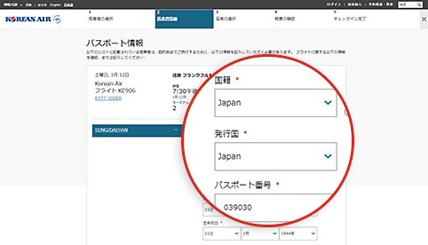

チェックイン手続きの時間を短縮！旅行をもっと便利に快適に！
モバイル/Web チェックイン
空港でチェックインの列に並ばずに 時間を有効に使えます！
ご利用方法
| 対象のお客様 | 運航区間 | チェックイン時間 |
|---|---|---|
| 大韓航空のフライトをご利用になる、有効なe-チケットをお持ちのお客様 | すべての路線 |
|
- (参照 1) 米国、カナダ、英国、パリ発着便 : 24時間前〜1時間前出発
- モバイル/Webチェックインに関する制限 (詳しくはこちらのリンクをクリックしてください。)
セキュリティチェックやその他の手続きに時間がかかる場合がありますので、 空港には時間に十分余裕を持ってお越しください。（国際線の場合ご出発1時間前、 韓国国内線の場合ご出発20分前までにはすべての手続きを終えてください。）
チェックインの方法

-

Step 1 予約を検索
- ご予約の際にマイレージ会員番号をご入力いただいていると、チェックインの手続きがより簡単になります。
- ご予約が表示されない場合は、予約番号または航空券番号を入力してから往路搭乗日とお名前を入力してください。
ホームページのメイン画面のチケット予約エリアにチェックイン会員でない場合は、予約番号、出発日、および乗客名を入力してWebチェックインを開始できます。
-

Step 2 渡航書類情報を入力 （国際線の場合）
- パスポートの情報および必要な渡航書類の情報を正確に入力してください。正しい情報を入力しなかった場合、出発地/到着地の事前審査の結果によってはチェックインができないことがあります。
- モバイルチェックインをご利用の場合、パスポートスキャン機能によりパスポート情報の入力がより簡単に行えます。
Webチェックイン時に、国籍、パスポート発行国/地域、パスポート番号などのパスポート情報を第2段階の旅客情報入力画面に入力できます。
-

Step 3 座席指定
- ご希望の座席をお選びください。
- 座席の変更をするには会員ID（会員以外の方は設定したパスワード）でログインしてください。
Webチェックインステップ3座席番号、場所、座席の特性など、各座席の情報を確認し、座席割り当て画面から目的の座席を選択できます。
-

Step 4 チェックイン完了
- 搭乗者ごとに「搭乗券を見る/印刷する」をクリックして搭乗券または交換証をプリントアウトしてください。
- オンラインチェックインの有効期間内であれば、搭乗券の再発行やチェックインのキャンセルが可能です。
Webチェックインステップ5 [Check-in Completion]画面では、Webチェックインのステータスを確認したり、搭乗券をPCに発行したりできます。
チェックイン後の空港での手続き
-

01 オンラインでチェックインをして、搭乗券を取得
- ご出発日に搭乗券（モバイル搭乗券またはプリントアウトしたもの）をお手元に用意して、空港で提示します。
-

02 空港で
搭乗券をお持ちのお客様の場合
- お預けになる手荷物のない場合 お持ちの搭乗券とともに、そのまま出発エリアに進んでください。 （カウンターにお立ち寄りいただく必要はありません。）
-
お預けになる手荷物がある場合
オンラインチェックイン専用のカウンター (参照 2) で手荷物を預けてから、
出発エリアへお進みください。
(参照 2) 仁川空港では、手荷物自動預け入れカウンターが時間もかからず 便利です（D1〜D17、E1〜E17）。
搭乗券交換証をお持ちのお客様の場合
- オンラインチェックイン専用のカウンターで搭乗券をお受け取りください。搭乗券発行の際に同時に手荷物のお預けも可能です。
-

03 保安検査と出国手続き
- 旅行者と航空機の安全を守るため、保安検査場では旅客および携帯品の検査を行います。
- 有効なパスポートならびに出発国および到着国で必要となる渡航書類（ビザ等）をお手元に用意し、出国審査場に進んでください。
-

04 搭乗
- 搭乗の際には搭乗券が必要となります。